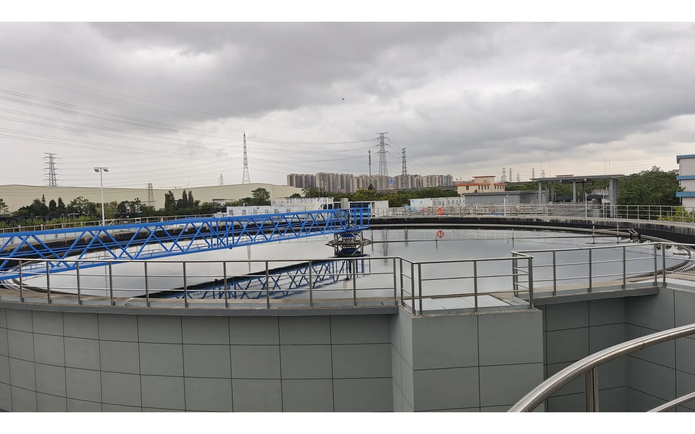

固威环保广州市固威环保科技开发有限公司
固威环保广州市固威环保科技开发有限公司12,000 m³/d
设计处理水量
01 / 纺织印染污水站
项目位于佛山市顺德区伦教街道世龙集约工业区，围绕印染废水处理与有限场地内的设施布置开展设计。


设计处理水量
峰值处理水量
核心设计工艺
采用预制装配式防腐栓接罐，结合竖向空间安排调节、缺氧及好氧单元，适应场地紧凑的布置条件。
配置液位、流量及水质监测，配套电气控制系统，衔接提升、曝气、膜产水及污泥处理环节。
02 / 明洋项目工艺与设备
设计采用磁混凝沉淀与 AO＋MBR 组合，分别承担悬浮物去除、生物处理和泥水分离。
系统剩余污泥 → 污泥储池 → 板框压滤机 → 脱水污泥外运处置
| 设备名称 | 规格 | 设计数量 | 作用 |
|---|---|---|---|
| 细格栅 | 宽 900 mm，栅隙 5 mm | 2 台（1 用 1 备） | 拦截进水中的较大悬浮物 |
| 调节池提升泵 | Q＝390 m³/h，H＝15 m，变频 | 3 台（2 用 1 备） | 将调节池污水提升至后续处理单元 |
| MBR 膜组件 | PVDF 中空纤维膜，SS304 膜架 | 16 套 | 进行泥水分离 |
| 板框压滤机 | 过滤面积 300 m² | 2 套 | 污泥脱水 |
| PAM 一体化装置 | 制备能力 2,000 L/h，配套加药泵 | 2 套 | 药剂制备与投加 |
设备型号及现场最终配置：〔待确认〕
03 / 集中处理设施
展示厂区池体、污泥处理设备及监控设施，了解集中处理系统的现场布置。


三期项目建设规模
生物处理工艺
污泥处理工艺
粗格栅 → 提升泵房 → 细格栅 → 旋流沉砂池 → 配水井 → 改良 AAO 生物池 → 周进周出二沉池 → 高效沉淀池 → 纤维转盘滤池 → 紫外消毒渠
设备型号及供货数量：〔待确认〕
生产废水与厂区生活污水分别核对水质，再确定处理工艺和设备组合。

结合服务人数、水量变化和排放去向，沟通箱式一体化设备配置。
根据生产工艺、水质检测与预处理条件，确定设备在整体方案中的用途。
核对可用场地、管道接口、供电及检修空间，衔接新建或改造工程。
结合工业污水处理产生的污泥性质、处理量及脱水要求，沟通板框压滤机与相关配套设备。
了解板框压滤机 →1. 工厂做什么生产，废水主要来自哪些工序。
2. 大致每天水量、排放去向，以及改造能否停产。
3. 您现在最想解决的问题是什么。
没有完整图纸或技术资料，也可以先说明已知情况。